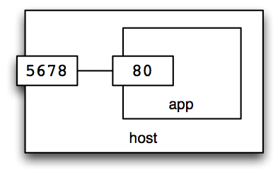
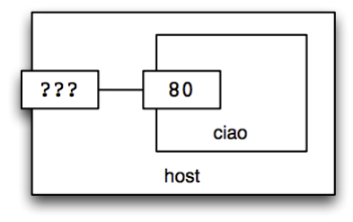
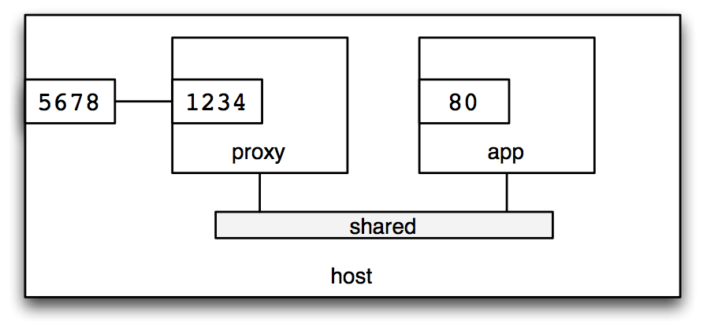
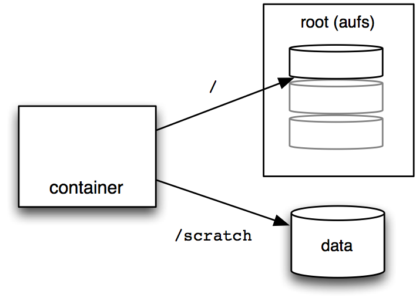
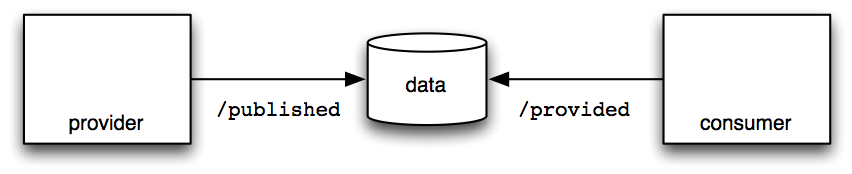
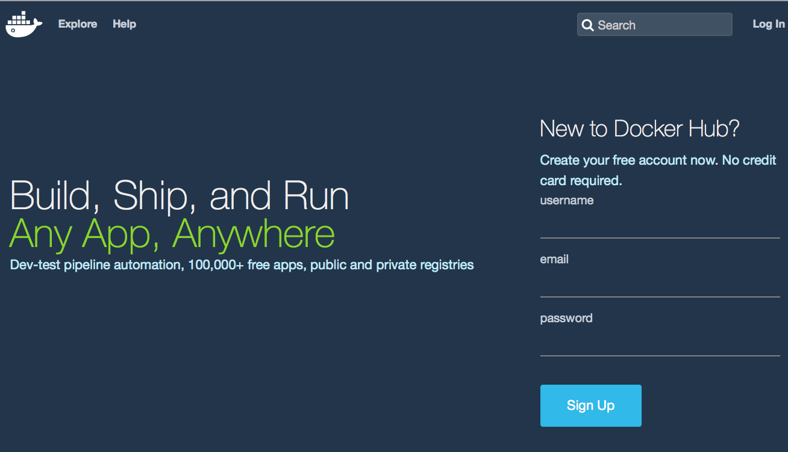

class: center, middle # An introduction to  --- class: center, middle # Courtesy of  --- # Agenda .lhs[ * Intro and overview * [Check your setup](#prep) * [Hello world!](#hello-world) * [Key concepts](#key-concepts) * [Containers vs Virtual Machines](#containers-vs-vms) * [The clever bits](#the-clever-bits) * Containers * [Ports](#ports) * [Environment variables](#environment) * [Networks](#networks) * [Volumes](#volumes) ] .rhs[ * Images * [Names and tags](#list-images) * [Building images](#building-images) * [Publishing images](#publishing-images) * [Runtime hints](#runtime-hints) * [Security](#security) * [Docker Compose](#compose) ] --- name: prep # Preparation You will need **a good connection to the internet** during this setup, and (to some extent) while going through the course, as we'll be installing software, and downloading Docker "images". It's useful to have **a local copy of these training materials**: `git clone https://github.com/realestate-com-au/intro-to-docker.git` You definitely need **Docker and Docker Compose**.<br/> Installation intructions follow. --- # Installing Docker #### OS X * Install [Docker for Mac](https://docs.docker.com/docker-for-mac/) #### Windows * Install [Docker for Windows](https://docs.docker.com/docker-for-windows/) #### Linux ``` $ `curl -sSL https://get.docker.com/ | sh` ``` --- # Check your setup Let's check that everything is working: ``` $ `./setup.sh` YAY: /var/run/docker.sock exists YAY: I can talk to docker Docker is at localhost YAY: docker version 1.12.0 YAY: docker-compose version 1.8.0 Pulling some images to get you started ... ``` Not working? Ask for help! .small.lhs[ Don't worry _too_ much if you get complaints about versions of `docker` and `docker-compose`; _most_ things will _probably_ still work.) ] --- # Docker Engine .center[   ] ??? Docker only runs on Linux. On OS X and Windows, it runs inside a VM. --- class: center, middle # Let us begin --- # Why would I even Docker? -- It's: * a way to package code, to run it elsewhere * so you can easily distribute your software -- And it's: * a way to control the (OS) environment your program runs within * so you can run it "anywhere", with confidence -- And also: * a lightweight alternative to a virtual machine * so you can quickly create sandboxed environments --- name: hello-world # Try it: Hello world! "Pull" an image: ``` $ `docker pull hello-world` Using default tag: latest latest: Pulling from library/hello-world c04b14da8d14: Pull complete Digest: sha256:0256e8a36e2070f7bf2d0b0763dbabdd67798512411de4cdcf9431a1feb60fd9 Status: Downloaded newer image for hello-world:latest ``` Run a container: ``` $ `docker run hello-world` Hello from Docker. … ``` --- name: key-concepts # Key concepts .lhs[ ## "image" * passive * a file system snapshot * similar to: - Virtual Machine image - AMI (Amazon Machine Image) ] -- .rhs[ ## "container" * active * a group of processes * similar to: - Virtual Machine - EC2 instance ] -- .center[  ] --- # Try it: different Linux distros Run Ubuntu: ``` $ `docker run ubuntu dpkg -l` ``` or CentOS: ``` $ `docker run centos rpm -qa` ``` -- … Speedy, huh? --- # Try it: run a shell ``` $ `docker run -i -t ubuntu bash` ``` * `-i` = Keep STDIN open * `-t` = Allocate a pseudo-TTY Now, try doing an Ubuntu thing: ``` root@container# `apt update` ``` --- # Try it: which kernel? Run `uname -a` on both `ubuntu` and `centos`: ``` $ `docker run ubuntu uname -a` $ `docker run centos uname -a` ``` Can you explain the result? -- Different distros, same kernel. .center[  ] --- # Wait, what's a "kernel"? .center[  ] --- name: containers-vs-vms # Containers vs. Virtualisation .center[  ] ??? With virtualisation, you have the added weight of a guest kernel. With Docker, processes communicate directly with the host kernel. --- # More containers vs. VMs <table class="compare"> <tr> <td></td> <th>Virtual<br/>Machines</th> <th>Docker</th> </tr> <tr> <td class="factor">image size</td> <td>Gigabytes</td> <td>Megabytes</td> </tr> <tr> <td class="factor">startup time</td> <td>minutes</td> <td>sub-second</td> </tr> <tr> <td class="factor">Linux kernel is</td> <td>separate</td> <td>shared</td> </tr> <tr> <td class="factor">isolation is</td> <td>complete</td> <td>pretty good</td> </tr> <tr> <td class="factor">used to encapsulate</td> <td>servers</td> <td>services</td> </tr> </table> --- # Try it: overhead, much? Use "time" to measure the overhead of running a command in a container. ``` $ `time docker run ubuntu bash -c "time sleep 1"` ``` How much time did Docker add? --- name: the-clever-bits class: center, middle, big # The clever bits Linux "cgroups" + "image" management =  --- # Linux "control groups" </br> Isolate processes by limiting access to: - hardware resources - other processes Not a new idea: * aka LXC * project started by Google * used extensively by PaaS such as Heroku * similar to Solaris Zones, BSD Jails Similar to how `chroot` limits access to the file system, but for resources. --- # Union file systems .lhs[ Images are made of "layers", and can **share** base layers. Container root file system is just another (writable) layer. Various drivers supported: - aufs - devicemapper - btrfs - overlay - zfs ] .rhs[ <table class="docker-image"> <tr><td class="writable">container root</td></tr> <tr><td>↓</td></tr> <tr><td class="snapshot">image layer</td></tr> <tr><td>↓</td></tr> <tr><td class="snapshot">image layer</td></tr> <tr><td>↓</td></tr> <tr><td class="snapshot">image layer</td></tr> </table> ] --- # Try it: test container file system isolation Attempt to cripple your Ubuntu image: ``` $ `docker run -i -t ubuntu bash` root@3256d8252fe6:/# `ls /usr/bin` root@3256d8252fe6:/# `rm -fr /usr/bin` root@3256d8252fe6:/# `ls /usr/bin` ^D ``` Now, start another container: ``` $ `docker run -i -t ubuntu bash` root@3ed46bfba026:/# `ls /usr/bin` ``` --- # Try it: check out those layers Use `docker history` to view image layers ``` $ `docker history ubuntu` IMAGE CREATED CREATED BY 07c86167cdc4 2 days ago /bin/sh -c #(nop) CMD ["/bin <missing> 2 days ago /bin/sh -c sed -i 's/^#\s*\( <missing> 2 days ago /bin/sh -c echo '#!/bin/sh' <missing> 2 days ago /bin/sh -c #(nop) ADD file:b ``` --- class: middle, center # Containers --- # Try it: a long-running container Run a container as a daemon (in the background): ``` $ `docker run -d realestate/ciao` ``` List the running containers: ``` $ `docker ps` ``` List ALL the containers: ``` $ `docker ps -a` ``` ??? `-d` starts a long-running process. Containers have an exit-status, and can be restarted with `docker start`. --- # Try it: container cleanup Remove a container: ``` $ `docker rm <ID>` ``` Remove a RUNNING container: ``` $ `docker rm -f <ID>` ``` Cleanup dead containers: ``` $ `docker container prune` ``` --- # Try it: name your containers Start a container with a `--name`: ``` $ `docker run -d --name app realestate/ciao` ``` Now you can use the NAME rather than an ID: ``` $ `docker rm -f app` ``` --- name: ports # Try it: map a port to a host port ``` $ `docker run -d --name app -p 5678:80 realestate/ciao` ``` .center[  ] ``` $ `curl localhost:5678` ``` --- # Remember to clean up If/when you see: ``` docker: Error response from daemon: Conflict. The name "/app" is already in use by container 5678abcd... ``` you need to remove the named container: ``` $ `docker rm -f app` ``` --- # Try it: use a random host port If you don't specify a host port, Docker will choose one: ``` $ `docker run -d --name app -p 80 realestate/ciao` ``` .center[  ] Use `docker port` to discover which one it chose: ``` $ `docker port app 80` ``` Hit it: ``` $ `curl $(docker port app 80)` ``` --- # Try it: logs You can get the output using `docker logs`: ``` $ `docker logs app` ``` Again, with timestamps: ``` $ `docker logs --timestamps app` ``` or even follow along in real time: ``` $ `docker logs --follow --timestamps app` ``` --- name: environment # Try it: set environment variables Assuming your application looks for environment variables, e.g. ```javascript var MESSAGE = (process.env.MESSAGE || "Ciao mondo."); ``` You can set them to provide configuration: ``` $ `docker run -d --name app -p 5678:80 \` `-e MESSAGE='Hey, guys!' \` `realestate/ciao` ``` Test the result: ``` $ `curl localhost:5678` ``` --- name: networks class: middle, center # Networks --- # Consider: a reverse-proxy image `nginx`, configured to: * listen on port `80` * forward requests to a host called "`app`" ``` upstream backend { server ${BACKEND:-"app"} fail_timeout=0; } server { listen ${PORT:-80}; location / { proxy_pass http://backend; } } ``` I've published it as `realestate/ciao-proxy`. --- # Try it: inter-container networking Create a "network": ``` $ `docker network create shared` $ `docker network ls` ``` Attach some containers: ``` $ `docker rm -f app proxy` $ `docker run -d --net=shared --name app \` `realestate/ciao` $ `docker run -d --net=shared --name proxy \` `-p 5678:80 \` `realestate/ciao-proxy` ``` ``` $ `curl -si localhost:5678` ``` --- # Try it: explore the network ``` $ `docker network inspect shared` ``` .center[  ] ``` $ `docker run -it --rm --network shared busybox` / # `nslookup app` ``` --- name: volumes class: middle, center # Volumes --- # Try it: volume from host Mount your home directory from the "host": ``` $ `docker run -it --rm -v $HOME:/myhome ubuntu bash` root@c10a43c38793:/# `mount | grep home` root@c10a43c38793:/# `cd /myhome; ls` root@c10a43c38793:/# `echo HELLO FROM DOCKER > written-from-docker` root@c10a43c38793:/# `exit` $ `ls $HOME` ``` --- # Try it: named cache volume ``` $ `docker run -it --rm -v my-cache:/cache ubuntu bash` root@c10a43c38793:/# `echo TESTING > /cache/test` ^D ``` Observe, volume created: ``` $ `docker volume ls` ``` Use it again: ``` $ `docker run -it --rm -v my-cache:/cache ubuntu bash` root@f5be5dec8a5a:/# `ls /cache` ``` Clean up: ``` $ `docker volume rm my-cache` ``` --- # Try it: anonymous volume for extra writable space ``` $ `docker run -it --rm --read-only -v /scratch ubuntu` root@c10a43c38793:/# `echo TESTING > /tmp/test` root@c10a43c38793:/# `echo TESTING > /scratch/test` ``` .center[  ] Tip: read-only root volume is great for security! --- # Try it: share a volume with another container Create a container, with a volume: ``` $ `docker run -it --rm --name provider -v data:/published ubuntu` root@118f38503653:/# `echo ohai > /published/stuff` ``` .center[  ] Use the volume from a different container: ``` $ `docker run -it --rm --name consumer -v data:/provided:ro ubuntu` root@d88a7a468b01:/# `cat /provided/stuff` ``` --- name: images class: center, middle # Images --- # What's in an image? -- .lhs[ * File-system snapshot * as layers ] -- .rhs[ * Meta-data * default command * default environment settings * default user id * default working directory * volume/port hints ] -- .clear[ <br/> <br/> ``` $ `docker image inspect ubuntu` ``` ] --- name: list-images # Try it: list images View images on your Docker host: ``` $ `docker images` REPOSITORY TAG IMAGE ID CREATED SIZE busybox latest e02e811dd08f 4 days ago 1.093 MB debian latest ddf73f48a05d 2 weeks ago 123 MB nginx latest ba6bed934df2 2 weeks ago 181.4 MB ruby 2.3-alpine 2467a614f30b 2 weeks ago 125.8 MB ... ubuntu 14.04 f2d8ce9fa988 2 weeks ago 187.9 MB ubuntu 16.04 45bc58500fa3 3 weeks ago 126.9 MB ubuntu latest 45bc58500fa3 3 weeks ago 126.9 MB ubuntu <none> 45bc58500fa3 3 weeks ago 126.9 MB ``` -- View images in the `ubuntu` repository: ``` $ `docker images ubuntu` ``` --- name: image-tags # Try it: use an image tag Image repositories can contain multiple images, identified by tag: .center[ `<REPOSITORY>[:<TAG>]` ] Run different versions of Ruby: ``` $ `docker run ruby:2.3 ruby --version` $ `docker run ruby:2.4 ruby --version` ``` -- By convention, there's usually a `latest` tag: ``` $ `docker run ruby:latest ruby --version` ``` which is the default: ``` $ `docker run ruby ruby --version` ``` --- name: image-digest # Try it: stable image references Image can also be addressed with immutable digests: .center[ `<REPOSITORY>[@<DIGEST>]` ] ``` $ `docker pull ruby:2.4 | grep Digest` ``` Use the digest: ``` $ `docker run ruby@sha256:ec92755b46504ec2d27d8a2887d080ca9ef799dfe7c010b7019b2165f875c738 \` `ruby --version` ``` Or, a different (older) one: ``` $ `docker run ruby@sha256:450ce48d8021d33c306168654256b9c960711e6c02991f270d55488caf860410 \` `ruby --version` ``` --- name: image-namespaces # Try it: non-standard namespace Repositories can have an optional namespace: .center[ `[<NAMESPACE>/]<REPOSITORY>` ] Use a community image: ``` $ `docker run -it supertest2014/nyan` ``` --- name: image-references # Summary: image references Image-name pattern: .center[ `[<REGISTRY>/][<NAMESPACE>/]<REPOSITORY>[:<TAG>][@<DIGEST>]` ] * `<REGISTRY>` defaults to `docker.io` (aka Docker Hub) * `<NAMESPACE>` defaults to `library` * `<TAG>` defaults to `latest` * `<DIGEST>` is a digest of image contents So this: ``` hello-world ``` Is short for: ``` docker.io/library/hello-world:latest@sha256:1f19634d26995c320618d94e6f29c09c6589d5df3c063287a00e6de8458f8242 ``` --- class: center, middle # Let's make one! --- name: building-images # Try it: build an image, the hard way Install some software in an `ubuntu` container: ``` $ `docker run -it ubuntu bash` root@f55393e5dc31:/# `apt-get update && apt-get install -y curl` … root@f55393e5dc31:/# `exit` ``` Now, `commit` that container to create an image: ``` $ `container=$(docker ps -lq)` $ `image=$(docker commit $container)` ``` Try it out: ``` $ `docker run ubuntu curl http://example.com` $ `docker run $image curl http://example.com` ``` --- # Try it: name your image Attach a tag to an existing image: ``` $ `docker tag $image curly` ``` Or, when making it: ``` $ `docker commit $container curly` ``` For later use: ``` $ `docker run curly curl http://example.com` ``` --- # Layers, with labels ``` $ `docker history curly` ``` <table class="docker-image"> <tr> <td class="snapshot">27323a7d221f</td> <td class="labels">curly:latest</td> </tr> <tr><td>↓</td></tr> <tr> <td class="snapshot">2d696327ab2e</td> <td class="labels">ubuntu:latest, ubuntu:16.04</td> </tr> <tr> <td class="snapshot">...</td> </tr> <tr> <td class="snapshot">...</td> </tr> <tr> <td class="snapshot">...</td> </tr> </table> --- # Try it: build an image, the easy way Use a `Dockerfile`: ``` FROM ubuntu RUN apt-get update && apt-get install -y curl ``` to build an image: ``` $ `docker build exercises/ubuntu-with-curl` Sending build context to Docker daemon 2.048 kB Step 1 : FROM ubuntu ---> 07c86167cdc4 Step 2 : RUN apt-get update && apt-get install -y curl ---> Running in 51bf195331b7 Ign http://archive.ubuntu.com trusty InRelease Get:1 http://archive.ubuntu.com trusty-updates InRelease [64.4 kB] … ---> 70b42c74bb66 Removing intermediate container 51bf195331b7 Successfully built 70b42c74bb66 ``` --- # Try it: leverage the "build cache" Use the recipe provided: ``` FROM node:6.2.2 COPY package.json /app/ WORKDIR /app RUN npm install COPY index.js /app/ ENV PORT 80 CMD ["node", "/app/index.js"] ``` to build an image: ``` $ `docker build -t ciao exercises/ciao` ``` --- # Try it: invalidate the "build cache" Build it again: ``` $ `docker build -t ciao exercises/ciao` ``` Faster, eh? Observe: "Using cache". -- Now try this: * Edit `exercises/ciao/index.js`, changing the default MESSAGE from "Ciao mondo" to something else, then build again. What happens at "Step 5"? -- * Make a change to `exercises/ciao/package.json`, and build again. What happens at "Step 4"? --- name: publishing-images # Publishing images Sign up for an account at [`https://hub.docker.com`](https://hub.docker.com) .center[  ] --- # Try it: push an image to Docker Hub Authenticate to Docker Hub: ``` $ `docker login` ``` "Tag" an image into _your_ namespace: ``` $ `docker tag ciao YOURNAMEHERE/ciao` ``` Now you can push it: ``` $ `docker push YOURNAMEHERE/ciao` ``` --- # Try it: pull an image someone else pushed Talk to the esteemed colleague next to you, and ask them for their Docker Hub username. Then, you shoud be able to fetch the image _they_ pushed. ``` $ `docker pull YOURNEIGHBOUR/ciao` ``` --- name: runtime-hints # Tip: set config defaults with "ENV" The `env` directive sets a default value for an environment variable. ``` ENV PORT 80 ``` but you can override it at runtime: ``` $ `docker run -d -e PORT=5000 ciao` ``` --- # Tip: implicit volume with "VOLUME" The `VOLUME` directive documents that the specified directory _should_ be on a volume. Sample from "[postgres](https://github.com/docker-library/postgres/blob/8a9fbcb40f13ccc7762f278b9df611cabe22d300/9.5/Dockerfile)" image: ``` FROM debian:jessie RUN apt-get install -y postgresql-common postgresql-9.5 … ENV PGDATA /var/lib/postgresql/data VOLUME /var/lib/postgresql/data … ``` Docker will <u>implicitly</u> add ``` -v /var/lib/postgresql/data ``` to the `docker run` command-line. --- # Tip: drop privilege with "USER" ``` FROM python:3.6 # install app (as root) COPY . /app # create a user RUN groupadd -r somebody && useradd -r -g somebody somebody # let them write to /app/tmp RUN mkdir /app/tmp && chown -R somebody:somebody /app/tmp # run as that user (by default) USER somebody ``` --- name: security # Security Here are a few tips to get you started. --- # Try it: Use minimal distributions ``` # how many files come with the ubuntu image? docker run ubuntu find / -xdev -type f | wc -l # how many files come with the alpine image? docker run alpine find / -xdev -type f | wc -l ``` Why is this relevant? --- # Try it: Drop to a non-privileged user ``` echo 'FROM alpine' > Dockerfile echo 'USER nobody' >> Dockerfile docker build -t non-privileged . docker run non-privileged whoami ``` Without this change, who would you have been? --- # Try it: Use read-only root filesystems ``` $ docker run --read-only -it alpine touch foo touch: foo: Read-only file system ``` Why is this an improvement for security? --- # Tip: Isolate groups of containers in their own networks ``` docker network create jail docker run -d --net=jail --name web nginx docker run --rm --net=jail alpine wget web docker run --rm alpine wget web docker rm -f web ``` If we didn't create a network, what network would we have used? --- # Tip: Share read only volumes with containers ``` docker volume create foo docker run -v foo:/foo:ro alpine touch /foo/bar touch: /foo/bar: Read-only file system ``` Why let the root filesystem have all the read-only fun? --- # Further reading: * [OWASP Security by Design Principles](https://www.owasp.org/index.php/Security_by_Design_Principles) * [Official Docker Images guidelines](https://github.com/docker-library/official-images#image-build) * [Dockerfile best practices](https://docs.docker.com/engine/userguide/eng-image/dockerfile_best-practices/#user) * [Security do's and don'ts discussion on docker](https://github.com/moby/moby/issues/13490) * [Dropping capabilities](https://rhelblog.redhat.com/2016/10/17/secure-your-containers-with-this-one-weird-trick/) * [Docker Security by Adrian Mouat](http://www.oreilly.com/webops-perf/free/docker-security.csp) --- name: compose class: middle, center # Docker Compose --- # Try it: docker-compose Given YAML config file: ``` version: '2' services: app: image: realestate/ciao proxy: image: realestate/ciao-proxy depends_on: - app environment: BACKEND: app ports: - 5678:80 ``` You can start the containers with: ``` $ `cd exercises/composed/basic` $ `docker-compose up` ``` --- # Try it: under the covers of compose In a different window, generate some traffic: ``` $ `curl localhost:5678` ``` What containers are running? ``` $ `docker ps` $ `cd exercises/composed/basic` $ `docker-compose ps` ``` How about networking? ``` $ `docker inspect basic_app_1 \` `| jq '.[0].NetworkSettings.Networks'` ``` Take it all down: ``` $ `docker-compose down` ``` --- # Try it: get compose to build your images ``` version: '2' services: app: `build: ../../ciao` proxy: `build: ../../ciao-proxy` depends_on: - app environment: BACKEND: app:80 ports: - 5678:80 ``` -- ``` $ `cd exercises/composed/autobuilt` $ `docker-compose up` ``` --- # Try it: add a "client" container ``` version: '2' services: app: ... proxy: ... client: build: ../../ubuntu-with-curl depends_on: - proxy command: sh -c "while true; do curl http://proxy; sleep 1; done" ``` ``` $ `cd exercises/composed/with-curl` $ `docker-compose up` ``` (Press Ctrl-C to tear everything down.) --- # Try it: docker-compose run Try "running" a "client" container: ``` $ `docker-compose run --rm client` ``` Or, go interactive: ``` $ `docker-compose run --rm client bash` root@ebb0d01e63b0:/# `curl -i app` root@ebb0d01e63b0:/# `curl -i proxy` ``` --- # Try it: sharing a volume ``` version: '2' volumes: shared: {} services: producer: image: busybox volumes: - shared:/out command: sh -c "while true; do date; sleep 1; done > /out/dates" consumer: image: ubuntu:14.04 depends_on: - producer volumes: - shared:/data command: tail -f /data/dates ``` ``` $ `cd exercises/composed/sharing` $ `docker-compose up` ``` --- class: middle, center # Well done! You made it. --- # Try it: Python and Redis and .Net and PostgreSQL and Node.js ``` $ `cd exercises/example-voting-app` $ `docker-compose up` ``` .center[ <img src="exercises/example-voting-app/architecture.png" width="75%"/> ] --- # Try it: Python and Redis and .Net and PostgreSQL and Node.js Once it's started running ... * voting-app at <a href="http://localhost:5000" target="vote">http://localhost:5000</a> * result-app at <a href="http://localhost:5001" target="results">http://localhost:5001</a> When you're done, clean up: ``` $ `^C` $ `docker-compose down` ``` --- class: middle, center # Thanks Feedback is <span style="text-decoration: line-through">welcome</span> essential.